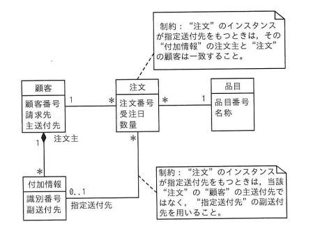

UML を用いて表した図のデータモデルを関係データベース上に実装する際の解釈のうち，適切なものはどれか。
（クラス図の構成）
- 顧客（顧客番号，請求先，主送付先）－1対多－注文（注文番号，受注日，数量）
- 顧客（1）－1対多（）－付加情報（識別番号，副送付先）：役割名「注文主」
- 注文（）－0..1－付加情報：役割名「指定送付先」
- 注文（*）－1－品目（品目番号，名称）
制約1：「"注文"のインスタンスが指定送付先をもつときは，その"付加情報"の注文主と"注文"の顧客は一致すること。」
制約2：「"注文"のインスタンスが指定送付先をもつときは，当該"注文"の"顧客"の主送付先ではなく，"指定送付先"の副送付先を用いること。」
ア "指定送付先"を指定する際，"付加情報"表のどの行でも選択できる。
イ "付加情報"表と"顧客"表の行数は一致していなければならない。
ウ "付加情報"表には"顧客"表に対する参照制約を指定する。
エ "付加情報"表には"注文"表に対する参照制約を指定する。

ウ：“付加情報”表には“顧客”表に対する参照制約を指定する。
| 選択肢 | 内容 | 補足 |
|---|---|---|
| ア | 付加情報表のどの行でも選択できる | 制約1により、「指定送付先」として選べる"付加情報"は、その付加情報の"注文主"が当該"注文"の"顧客"と一致するものに限られるため、どの行でも自由に選べるわけではなく誤り |
| イ | 付加情報表と顧客表の行数が一致 | クラス図上、顧客と付加情報の関連の多重度は「顧客側1，付加情報側*（複数）」であり、1人の顧客が複数の付加情報をもつことができるため、両表の行数が一致する必然性はなく誤り |
| ウ | 付加情報表が顧客表を参照 | 正解。"注文主"という役割名をもつ「顧客（1）－付加情報（*）」の関連から、1件の付加情報インスタンスは必ず1人の顧客（注文主）に対応するため、関係データベース上では"付加情報"表が"顧客"表（注文主の顧客番号）に対する外部キー（参照制約）をもつ実装になる |
| エ | 付加情報表が注文表を参照 | "指定送付先"の関連は、注文側の多重度が0..1であり「1つの注文が高々1つの付加情報を指定送付先としてもつ」という関係であるため、外部キーは"注文"表側が"付加情報"表を参照する形で実装されるのが自然であり、逆方向を示すこの記述は誤り |
出典：2025年度 秋期 応用情報技術者試験 午前 問25（IPA）